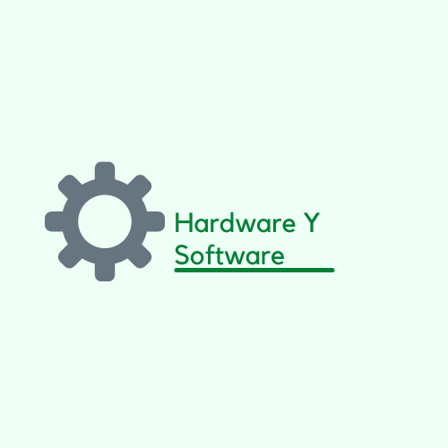

Hardware y Software trae dos en uno, Hardware trata todo lo fisico, ya sea como armar un robor
como poner sensores y que se activen luces entre otros.
En cambio Software te trae todo el tema de configuracion en la Computadora, ya sea instalacion de software, como resetear equis cosa, etc.
Aqui podemos ver una de las tantas que utilizamos para hacer Robots, aqui un ejemplo